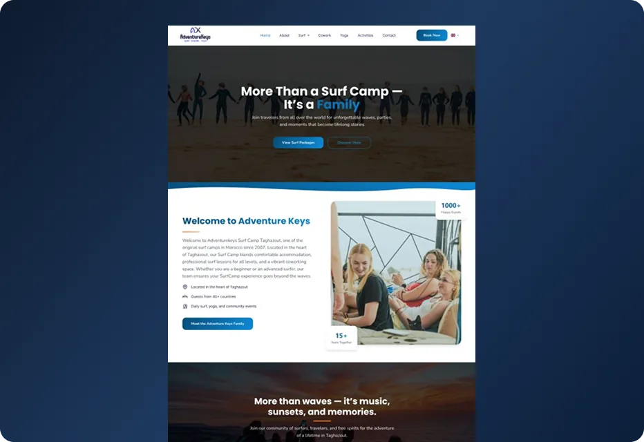
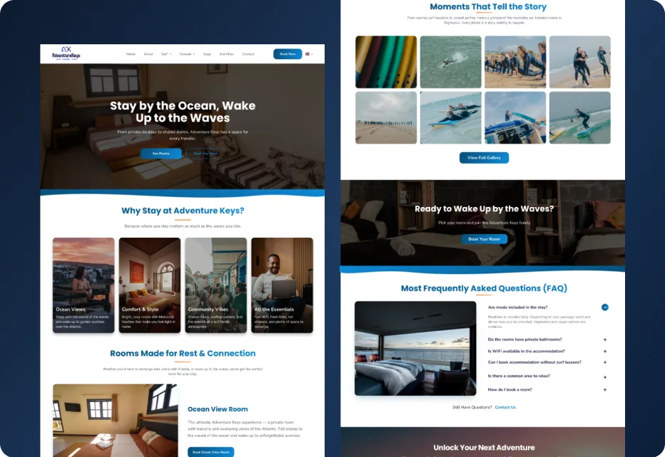
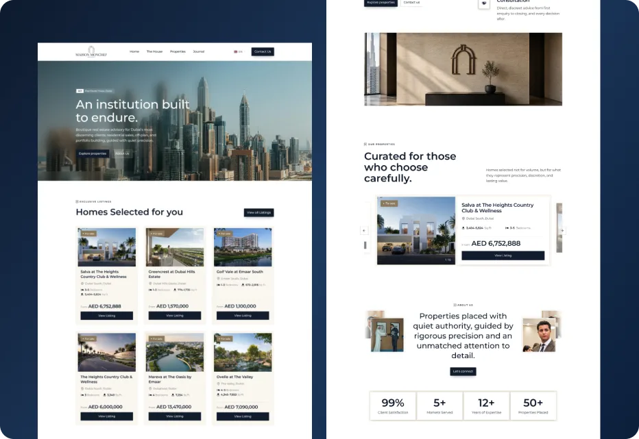

Dark mode
Un studio indépendant, pas une agence de trente personnes. Vous parlez à la personne qui conçoit votre site et qui écrit son code, du premier appel à la mise en ligne : rien ne se perd entre le brief et le résultat.

Le Maroc est aujourd'hui l'un des marchés les plus connectés du continent. La quasi-totalité des personnes qui cherchent un prestataire comme vous le font depuis un téléphone — et une page Facebook ne suffit plus à installer la confiance avant le premier appel.
Sources : DataReportal, Digital 2026 Morocco (internautes, octobre 2025) et ANRT, tableau de bord trimestriel des télécoms, T1 2026 (usage data mobile par client).
Des outils standards et largement utilisés, pas des technologies exotiques. N'importe quel développeur peut reprendre votre site plus tard, et c'est bien l'objectif.
Framework React
Bibliothèque d'interface
Typage statique
Styles
Animations
CMS headless
Reprises et migrations
Base de données
Génération du blog
ORM
Maquettes et design system
Analytics
Tracking
Suivi SEO
Outils SEO
Hébergement et déploiement
Versioning et déploiement continu
CDN et sécurité
Services cloud
Conteneurs
Nous choisissons la fondation qui convient au projet, puis nous la configurons nous-mêmes plutôt que de remplir un thème tel quel. C'est ce qui garde les pages légères, la structure SEO sous notre contrôle, et vous évite les mauvaises surprises après la livraison.
La plupart des projets au Maroc entrent dans l'une de ces trois catégories. Si le vôtre n'y rentre pas, dites-le : nous vous dirons honnêtement si nous sommes le bon interlocuteur.
Votre carte de visite digitale. Pensé pour les pros qui concluent au téléphone ou en rendez-vous : le site doit installer la crédibilité, répondre aux questions évidentes et rendre la prise de contact immédiate.
Voir ce qui est inclusVendre en ligne, 24h/24. Catalogue, fiches produits, un parcours d'achat qui ne perd personne au moment de payer, et un back-office que vous pouvez réellement gérer vous-même.
Comment nous le construisonsApplications web, back-office et intégrations spécifiques : réservation en ligne, gestion de biens, espace client, tableau de bord. Pour les activités qui ont un vrai flux à automatiser, pas une plaquette à publier.
Voir un projet sur mesureAutant le dire clairement, parce que cela change la façon dont le projet se déroule : en votre faveur sur la plupart des points, et en votre défaveur sur un seul.
De l'idée au lancement, on s'occupe de tout.


Pas une liste d'options à cocher et à payer. Ce sont les fondations de chaque projet que nous livrons, sur le plus petit site vitrine comme sur une plateforme de réservation :
Les deux approches produisent un site web. Elles ne produisent pas le même résultat trois mois plus tard, au moment où vous cherchez pourquoi personne n'appelle.
Des projets réels pour des entreprises marocaines et internationales, du site vitrine à la plateforme de réservation.






Des sites pensés pour renforcer votre image, rassurer vos visiteurs et générer plus de demandes.
Les questions qu'on nous pose le plus souvent sur la création d'un site web au Maroc.
Cela dépend du nombre de gabarits, du contenu, des langues et des intégrations — plus que du nombre de pages brut. Nos formules démarrent à 1 400 DH ; le détail est sur la page packages.
7 à 14 jours pour un site vitrine, 2 à 4 semaines pour un site multi-pages et multilingue, 4 à 8 semaines pour du sur-mesure avec réservation ou boutique. Ce qui retarde une mise en ligne, c'est presque toujours le contenu, pas le code — nous détaillons cela dans notre guide des délais.
Oui. Structure de titres, balises meta, sitemap, données structurées et vitesse de chargement font partie du travail de base, pas d'une option facturée en plus. Ce qu'aucun studio ne peut honnêtement promettre, c'est une position précise sur Google.
Oui, en français, anglais et arabe, et également en sous-traitance pour des agences. Maison Monchef, une plateforme immobilière trilingue, a été livrée pour un client basé à Dubaï. Voir notre page international.
Vous parlez directement à la personne qui conçoit et développe votre site : pas de chef de projet intermédiaire, pas de brief qui se déforme en chemin. En contrepartie, nous ne prenons pas les projets qui exigeraient réellement une équipe de plusieurs dizaines de personnes.
Nous configurons l'hébergement sur le réseau mondial de Vercel pour chaque projet ; l'hébergement lui-même est facturé directement par Vercel, il n'est pas inclus dans notre prix. Le certificat SSL est émis et renouvelé automatiquement. Nous gérons l'enregistrement du domaine et la configuration DNS de bout en bout, et les deux sont mis à votre nom : vous en gardez le contrôle quoi qu'il arrive ensuite.
Oui. Les sites qui ont besoin d'être mis à jour régulièrement sont livrés avec un CMS, et nous vous formons à sa prise en main à la remise des accès : vous modifiez vous-même textes, images, produits ou articles. Pour les changements de structure — un nouveau gabarit de page, une nouvelle fonctionnalité — nous restons joignables sur WhatsApp.
Oui. Nous sommes basés à Tanger et travaillons avec des entreprises partout au Maroc — Casablanca, Rabat, Marrakech, Agadir, Fès et au-delà. Tout le processus se déroule par appels, Figma et WhatsApp : la ville ne change rien aux délais. Chacune de ces villes a sa page dédiée.
Chaque ville a sa propre page, avec son économie locale, les secteurs dans lesquels nous y intervenons et les questions que s'y posent réellement les entreprises.
Le choix de la personne à qui confier le projet compte autant que la ville où vous êtes. Notre guide le détaille : comment choisir une agence web au Maroc.
Devis gratuit sous 24h, et une réponse franche sur les délais et le budget — y compris quand nous ne sommes pas le bon interlocuteur.